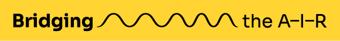

An international cooperation project supported by the Creative Europe programme.
1 Feb 2026Month 4 of 48 · 44 to go31 Jan 2030
Year 1Year 2Year 3Year 4

About The Project
Bridging the A-I-R is a European cooperation project that explores, prototypes and shares sustainable models of artistic residencies — with a focus on the people and organisations who host them. We connect independent cultural organisations, artists and mentors across six countries: Czechia, Slovakia, Hungary, Italy, Spain and Germany. Between 2026 and 2030, twelve pilot residencies will test new formats built on care, fair conditions and balance between centre and periphery. This platform is the project's central digital hub and open archive: everything we research, write and learn — open calls, methodologies, manuals and reports from the field — is published here, free for anyone designing or hosting a residency in Europe.
Bridging the A-I-R runs on a two-tiered digital infrastructure. The btair.eu platform is the project's central European hub — a shared library of outputs, calls and contacts, published in English. Alongside it, three national platforms keep the conversation rooted in local contexts: ART-IN-RES.cz, curated by Nová síť, and its newly localised Slovak and Hungarian versions, curated by Anténa and METTRIN. The two levels are interconnected so that knowledge flows both ways — from local scenes to the European field and back. Choose your entry point below.
Before testing anything in practice, we mapped existing residency practices across Europe. The research looked at how programmes are funded, how artists are selected, what infrastructure and conditions hosts can offer, and what role mentors and local cultural mediators play. On this basis, the project formulated ten model scenarios for residency practice — each reflecting different centre typologies and stakeholder needs, and each measured against shared values: contextual sensitivity, low-impact mobility, participatory structure, inclusion and transferability. Four of these models were selected for long-term testing through twelve pilot residencies hosted by the project partners.
This is the project's open library. Every document produced inside Bridging the A-I-R — methodologies, manuals, strategic papers and policy materials — is published here in full, free to download and released for re-use under an open licence. Together they form a practical toolkit for anyone designing, hosting, mentoring or funding an artistic residency in Europe today.
Sustainability Methodology
A framework for running residencies in an environmentally and socially sustainable way. It covers travel and low-impact mobility, hospitality, waste, fair pay and community relations, and is built from real cases tested inside the project's twelve pilot residencies. Conceived as a working tool: principles you can adapt, not rules you must obey.
The project's strategic outlook on the future of artistic residencies in Central and Southern Europe. Drawing on four years of research and practice, it identifies structural gaps, shared priorities and opportunities for the independent sector — and outlines a framework for supporting residency infrastructure beyond 2030.
A practical, step-by-step guide for organisations hosting residencies — especially smaller and emerging providers. From preparing the space and budget to contracts, communication, care for the artist and final evaluation, it distils the experience of six partner organisations into one usable handbook, including guidance on working with the ART-IN-RES platforms.
What does it mean to mentor a resident artist? This guide describes the mentor's role and its boundaries, and offers concrete techniques tested by mentors across the project's residencies — from first meeting to final reflection. Part of the project's adaptable mentoring framework for residency practice.
How to write an open call that is clear, fair and attractive to the right artists. Built on the project's jointly approved selection criteria — prioritising geographic proximity, low-impact mobility, inclusion and artistic relevance — it includes templates, checklists and real examples from the partners' calls.
Collected press materials, articles and media coverage of Bridging the A-I-R, updated throughout the project. A resource for journalists, researchers and partners — for press enquiries, contact our communication manager (see Contacts).
Public events, open calls, residency announcements and project news from all six partner countries. Everything is sorted by date, most recent first, and each event links to its organiser, where you'll find tickets, registration or further details. Past events move to the archive — together with documentation where available.
Upcoming programme
Photo or graphic of the event
Tue 14 July 2026 · 17:00 · Bröllin, DE
Schloss Bröllin Showing
Organised by schloss bröllin e.V.
Public showing at the end of the summer residency, on the outdoor stage of the former estate. Open to all — neighbours, visitors and the professional public alike.
Closing presentation of the spring residency: a performance, a conversation with the artist and mentor, and a small reception in the courtyard. Free entry, everyone welcome.
Five mentors share what mentoring an artist in residence really looks like — honest stories, no jargon. Open to artists, hosts and anyone curious about the project's mentoring framework; registration required.
Public launch of the open call for the project's artistic residencies. Partners presented the residency models, answered questions and shared the application package.
Bridging the A-I-R is built on partnership. Six organisations from six countries — Czechia, Italy, Spain, Slovakia, Germany and Hungary — work together as equals, each bringing its own context, history and methods to the table. The consortium is completed by two associated partners: the Czech Centres, extending the project's reach beyond the EU, and Creative Institute Trenčín, linking it to the European Capital of Culture Trenčín 2026.
Nová síť is a Czech cultural service organisation working in art, education, networking and arts advocacy, building long-term infrastructure for the independent performing arts scene. It initiated the residency platform ART-IN-RES.cz and brings experience from European projects on cultural mobility, including Connecting V4 – ART-IN-RES and SPARSE PLUS. Within Bridging the A-I-R, Nová síť coordinates the project and leads its strategy, communication and advocacy, provides systemic support to residency providers, hosts residencies and oversees the dissemination of all project outputs.
Anténa is the Slovak network for independent culture, connecting more than thirty cultural centres, residency spaces and contemporary art venues across the country, with deep expertise in advocacy and support for cultural work outside major cities. Within the project it leads the digital infrastructure — including ART-IN-RES.sk — coordinates training activities and hosts a mentor-led research residency.
IDRA Teatro is a theatre in the centre of Brescia that has supported contemporary performing arts and residency programmes since 2008, as a member of the ETRE network of Lombardy residency centres and with a strong emphasis on equal opportunities and community impact. Within the project it hosts residencies and leads the international symposium, networking and capacity-building activities.
Inestable is a performing arts project based in Valencia, running the venue Espai Inestable, the residency space Graner, the theatre company Teatro de lo Inestable and several residency programmes, with long experience in impact evaluation and the transferability of residency formats. Within the project it leads the development, implementation and evaluation of the residency models.
Schloss Bröllin is one of Europe's longstanding international residency centres for performing arts, created from a former agricultural estate in rural Vorpommern and supporting artists and local communities since 1990. Within the project it hosts residencies, contributes decades of practical know-how and pilots environmentally sustainable residency models in a region with limited cultural access.
METTRIN Arts Center is a newly emerging cultural centre in the Nógrád region of northern Hungary, operated by the Swing Jazz Cultural Foundation and built around ecological and community-based approaches to residency practice. Within the project it curates ART-IN-RES.hu and pilots a transferable residency model in a region long underserved by cultural infrastructure.